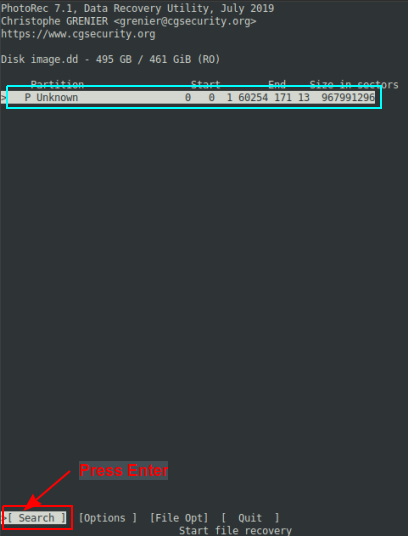

This article documents the various steps in an attempt to rescue a failed hard drive (any type - NVMe, SSD, or HDD) using tools available on Linux. In this example, the attempt was to rescue a Windows based NVMe drive.
In order to access the NVMe device on Linux, one should use a USB based NVMe enclosure. In this case, the enclosure used was NVMe Enclosure.
The following were the different Linux commands used in the process after attaching the enclosure (with the device) via USB:
-
To determine the device the USB drive is mapped to, execute the following command:
$ lsblk -f
The following would be a typical output:
Output.1
NAME FSTYPE FSVER LABEL UUID FSAVAIL FSUSE% MOUNTPOINTS ..... SNIP ..... sdh isw_raid_member 1.4.01 |--sdh1 vfat FAT32 ESP 2086-F6DA |--sdh2 |--sdh3 |--sdh4 ntfs WINRETOOLS 5C085CB8085C933E |--sdh5 ntfs Image FCC25D2CC25CED00 |--sdh6 ntfs DELLSUPPORT 809ACA979ACA88DC
From the above Output.1, we know the attached USB device is /dev/sdh
-
To detemine the various partitions on the attached USB device and their filesystem types, execute the following command:
$ sudo fdisk -l /dev/sdh
The following would be a typical output:
Output.2
The backup GPT table is not on the end of the device. Disk /dev/sdh: 476.94 GiB, 512110190592 bytes, 1000215216 sectors Disk model: Units: sectors of 1 * 512 = 512 bytes Sector size (logical/physical): 512 bytes / 4096 bytes I/O size (minimum/optimal): 4096 bytes / 4096 bytes Disklabel type: gpt Disk identifier: A74B302E-4F9C-4A07-A2E9-1A7588C926EE Device Start End Sectors Size Type /dev/sdh1 2048 1333247 1331200 650M EFI System /dev/sdh2 1333248 1595391 262144 128M Microsoft reserved /dev/sdh3 1595392 969586687 967991296 461.6G Microsoft basic data /dev/sdh4 969586688 971614207 2027520 990M Windows recovery environment /dev/sdh5 971614208 997605375 25991168 12.4G Windows recovery environment /dev/sdh6 997607424 1000187903 2580480 1.2G Windows recovery environment
From the above Output.2, we are interested in salvaging the contents of /dev/sdh3
-
Given that it is a Microsoft Windows partiton, the filesystem should be of type ntfs. To mount the attached USB device to a directory, execute the following commands:
$ sudo mkdir /media/windows
$ sudo mount -t ntfs /dev/sdh3 /media/windows
The following could be a typical output:
Output.3
NTFS signature is missing. Failed to mount '/dev/sdh3': Invalid argument The device '/dev/sdh3' doesn't seem to have a valid NTFS. Maybe the wrong device is used? Or the whole disk instead of a partition (e.g. /dev/sda, not /dev/sda1)? Or the other way around?
From the above Output.3, we see the filesystem type of the partition /dev/sdh3 is incorrect
-
We will attempt to mount the attached USB device using the UUID of the device. To determine the UUID of the attached USB device, execute the following command:
$ sudo blkid /dev/sdh3
The following would be a typical output:
Output.4
/dev/sdh3: PARTLABEL="Basic data partition" PARTUUID="cd601dcf-fb1c-44a3-a86d-c15403c4422d"
From the above Output.4, we see the UUID the attached USB device as cd601dcf-fb1c-44a3-a86d-c15403c4422d
-
To mount the attached USB device to a directory using its UUID, execute the following command:
$ sudo mount PARTUUID=cd601dcf-fb1c-44a3-a86d-c15403c4422d /media/windows
The following could be a typical output:
Output.5
mount: /media/windows: wrong fs type, bad option, bad superblock on /dev/sdh3, missing codepage or helper program, or other error.
From the above Output.5, we see something is messed up with the partition /dev/sdh3
-
We will make one more attempt to mount the attached USB device to a directory using a safer option. To do that, execute the following command:
$ sudo ntfs-3g -o force,rw /dev/sdh3 /media/windows
The following could be a typical output:
Output.6
NTFS signature is missing. Failed to mount '/dev/sdh3': Invalid argument The device '/dev/sdh3' doesn't seem to have a valid NTFS. Maybe the wrong device is used? Or the whole disk instead of a partition (e.g. /dev/sda, not /dev/sda1)? Or the other way around?
From the above Output.6, it is clear we failed again
-
Next, we will attempt to fix the common ntfs errors of the attached USB device. To do that, execute the following command:
$ sudo ntfsfix /dev/sdh3
The following could be a typical output:
Output.7
Mounting volume... NTFS signature is missing. FAILED Attempting to correct errors... NTFS signature is missing. FAILED Failed to startup volume: Invalid argument NTFS signature is missing.
From the above Output.7, we know something is really wrong with the partition /dev/sdh3
-
It is now time to switch to the next phase of the process with more advanced tools. We will use the testdisk toolset. To do that, execute the following command:
$ sudo apt install testdisk -y
-
To launch the testdisk command, execute the following command:
$ sudo testdisk
The following illustration shows the user session:
Fig.1Select the disk associated with the attached USB device and press the Enter key on the option [>Proceed].
-
Select the [ Advanced ] option and press the Enter key as shown in the illustration below:
Fig.2 -
Select the partition 3 P MS Data and press the Enter key on the option [>Image Creation] as shown in the illustration below:
Fig.3 -
The following illustration shows the image creation process in progress:
Fig.4This will take at least 1.5 hours to finish - so be patient !!!
-
Once the image creation process completes successfully, press the Enter key on the option [>Ok] to exit as shown in the illustration below:
Fig.5The disk image is stored in a file called image.dd.
-
The next step is to recover the various data files (doc, docx, jpg, mp3, xls, xlsx, etc) from the just created disk image.
To recover files from the disk image we just created, launch the photorec command by executing the following command:
$ photorec
The following illustration shows the user session:
Fig.6Select the disk image and press the Enter key on the option [>Proceed].
-
Select the [ Search ] option and press the Enter key as shown in the illustration below:
Fig.7 -
Select the filesystem type [ Other ] and press the Enter key as shown in the illustration below:
Fig.8 -
Select location for the recoverd files and press the C key as shown in the illustration below:
 Fig.9
Fig.9 -
The following illustration shows the data recovery process in progress:
Fig.10This will take few hours to finish - so be patient !!!
There were a bunch of files that were recovered but everyone of them seemed CORRUPTED.
-
The next step was to dump the raw image of the attached USB device using the ddrescue tool. This operation took few hours to create the raw disk image. Trying to restore from the raw disk image FAILEd as well.
The whole disk rescue experiment was UNSUCCESSFUL in the end, but worthwhile as we learnt a LOT from the process !!!